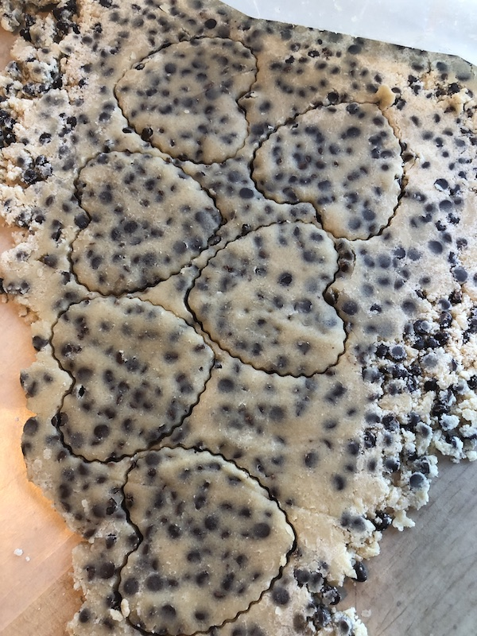

Chocolate Chip Shortbread Cookies

A versatile cookie great for any occasion!
A classic cookie recipe that will wow everybody! Buttery and
tender, they will melt in your mouth.
Ingredients
- 1 cup salted butter, room temperature
- 1/2 cup granulated sugar
- 1 tsp vanilla extract
- 2 cups all purpose flour
- 2/3 cup mini chocolate chips
Instructions
- Mix butter, sugar, and vanilla together for 2 minutes.
- Turn the mixer to low and slowly add the flour, mixing until just combined.
- Stir in the mini chocolate chips.
- Transfer the dough to a ziploc bag and chill for at least 2 hours.
- Preheat oven to 325 degrees. Line a baking sheet with parchment paper and set aside.
- Roll dough out into a large square, 1/3-inch thick. Use cookie cutters of choice to cut out shapes. Reincorporate scraps and repeat until all dough is used.
- Place on baking sheet and bake for 18-20 minutes.
- Transfer to wire rack to cool completely.